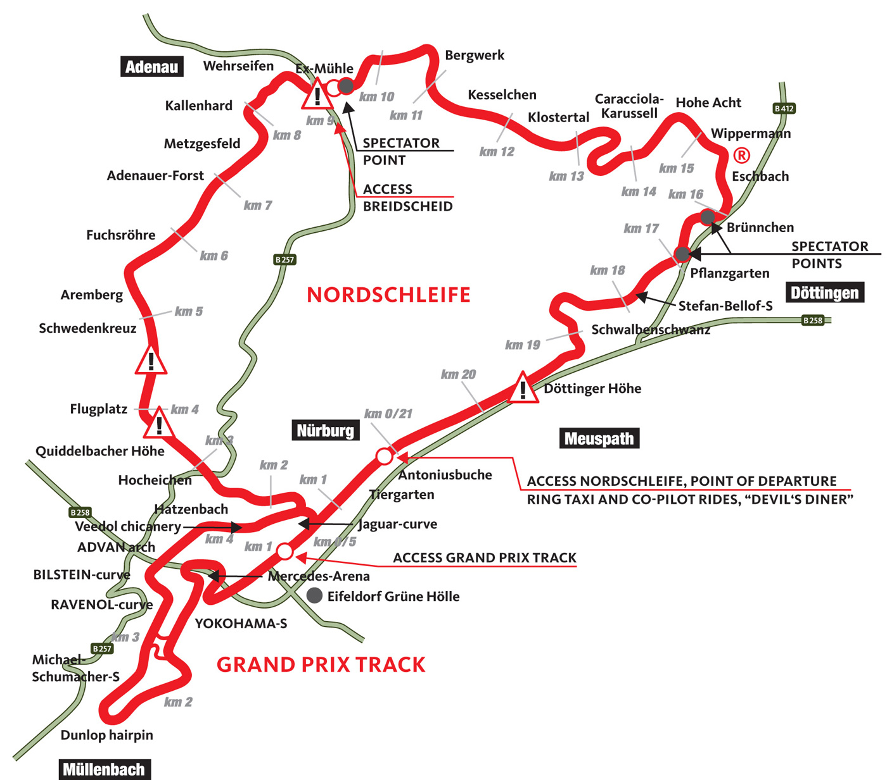

Os protótipos e a produção
O projeto inicial do Koenigsegg CC foi desenhado por Christian von Koenigsegg. Ele então levou seus esboços para o designer industrial David Crafoord para fazer dos seus esboços em um modelo em escala 1:5. David então colocou seu toque pessoal ao resumo do projeto e terminou o modelo. Este modelo foi posteriormente ampliado por Sven-Harry Åkesson a fim de criar a ficha de base para o protótipo do primeiro Koenigsegg.
Após quase dois anos em construção, o veículo conceito Koenigsegg CC (Competition Coupé) foi finalmente lançado em público pela primeira vez por Rickard Rydell em um evento na pista de corrida de Anderstorp em 1996. Outros pilotos de carros de corrida de renome como Picko Troberg e Calle Rosenblad também testaram o protótipo e ficaram todos impressionados com o excelente desempenho, comprovando a qualidade do conceito e permitindo que o próximo passo fosse dado: apresentar o carro para potenciais compradores.

Tal protótipo inicial também foi exibido no Festival de Cinema de Cannes em 1997 e seu sucesso foi imediato. Com os resultados satisfatórios combinados com a grande cobertura da mídia em Cannes, a empresa decidiu avançar e se engajar na criação de um produto acabado.
Em setembro de 2000 que o primeiro protótipo de produção fez sua estreia pública no Paris Motor Show. Este modelo foi utilizado para diversos testes pela marca, inclusive em testes de colisão, permitindo que a empresa homologa-se o veículo para venda. Essa versão inicial tinha um motor de 655 hp que mais tarde apareceria nos seus primeiros carros vendidos.
Sendo assim, somente após muitos anos de desenvolvimento e protótipos que a produção do primeiro carro de rua legalizado da marca aconteceu em 2002. Construído em 2002 e entregue no Salão de Genebra em março de 2003, o seu estilo minimalista e limpo o diferenciava dos seus concorrentes e, desde então, é a base para todos os futuros carros da Koenigsegg em termos de estética, filosofia e funcionalidade. Seis exemplares do CC8S foram produzidos no total, tornando-se um dos modelos mais raros da Koenigsegg de todos os tempos. Dois desses seis carros estavam no volante à direita.
História da fábrica
Von Koenigsegg teve a ideia de construir seu próprio carro depois de ver o filme norueguês animado Pinchcliffe Grand Prix em stop-motion, em sua juventude.[10] No entanto, ele deu seus primeiros passos no mundo dos negócios com aproximadamente 20 anos na gestão de uma empresa comercial chamada Alpraaz em Estocolmo, na Suécia. A Alpraaz exportava alimentos da Europa para o mundo em desenvolvimento. O sucesso desse empreendimento deu a von Koenigsegg o pé financeiro necessários para iniciar sua carreira escolhida como um fabricante de automóveis.
Inicialmente, o Koenigsegg Automotive foi baseado em Olofström. Em 1997, a empresa precisava de instalações maiores e mudou-se para Margretetorp, ao lado de Ängelholm. No entanto, em 22 de fevereiro de 2003, uma das instalações de produção pegou fogo e ficou seriamente danificada. A partir de 2003 a Koenigsegg foi para dois grandes hangares de jatos de combate e um edifício de escritórios em uma fábrica de automóveis. Desde que a fábrica está localizada no ainda ativo aeroporto de Ängelholm, os clientes podem chegar de avião privado junto à fábrica. Além disso, a Koenigsegg controla e usa a pista dos ex-militares para testar o funcionamento dos carros de produção e testes de alta velocidade.
O emblema da Koenigsegg foi projetado em 1994 por Jacob Låftman, com base no escudo da família Koenigsegg. O escudo tem sido o brasão da família desde o século XII, quando um membro da família foi condecorado pelo Sacro Império Romano-Germânico.
A instalação de 4000 m² já abrigou o Esquadrão de Caças nº 1 da Força Aérea Sueca antes que o esquadrão fosse retirado do serviço. A insígnia do esquadrão, um fantasma voador, agora adorna o compartimento do motor de todos os Koenigsegg construídos como uma homenagem ao Esquadrão
Nurburgring
A lendária pista de corrida de Nürburgring, localizada nas pitorescas colinas de Eifel, na Alemanha, é um dos circuitos automobilísticos mais desafiadores e reverenciados do mundo. Com uma história rica e uma reputação que transcende décadas, Nürburgring é um ícone no mundo do automobilismo, atraindo entusiastas, pilotos profissionais e fabricantes de automóveis de renome.
A lendária pista de corrida de Nürburgring, localizada nas pitorescas colinas de Eifel, na Alemanha, é um dos circuitos automobilísticos mais desafiadores e reverenciados do mundo. Com uma história rica e uma reputação que transcende décadas, Nürburgring é um ícone no mundo do automobilismo, atraindo entusiastas, pilotos profissionais e fabricantes de automóveis de renome. A pista é composta por dois traçados distintos: o Nordschleife (Circuito Norte) e o Grand Prix Circuit. O Nordschleife, em particular, é conhecido por sua extensão impressionante de 20,8 quilômetros e mais de 150 curvas desafiadoras, proporcionando um desafio técnico e físico único para os pilotos. Apelidado de "Inferno Verde" devido às suas paisagens exuberantes e densas áreas florestais circundantes, o Nordschleife é famoso por oferecer uma experiência de pilotagem incomparável.
Fonte da imagem : currus racing
Construído na década de 1920, Nürburgring foi inicialmente concebido como um circuito de corrida para testar a habilidade e a resistência dos pilotos. Desde então, tem sido palco de inúmeras corridas lendárias, incluindo o Grande Prêmio da Alemanha e competições de endurance notáveis, como as 24 Horas de Nürburgring.
O desafio que Nürburgring impõe aos pilotos é aprimorado pela imprevisibilidade do clima local, que pode variar significativamente ao longo da pista. A combinação de curvas rápidas, mudanças elevadas de elevação e trechos técnicos fazem deste circuito um campo de testes ideal para o desenvolvimento de carros esportivos e de alto desempenho.
Nürburgring tornou-se um local de peregrinação para entusiastas do automobilismo, atraindo visitantes de todo o mundo que desejam experimentar pessoalmente a intensidade e a emoção de suas curvas desafiadoras. Além das atividades de corrida, o complexo também abriga um museu dedicado ao automobilismo, oferecendo uma visão fascinante da história do circuito e dos carros que o tornaram famoso.
Com sua reputação incomparável, Nürburgring permanece como um bastião da paixão pelo automobilismo, onde a habilidade dos pilotos é posta à prova em uma das pistas mais desafiadoras e icônicas do mundo.
Acidente com One: 1
Em 18 de julho de 2016, o Koenigsegg One:1 que estava sendo preparado para bater o recorde de volta em Nurburgring, na Alemanha, se envolveu num violento acidente. Quatro dias depois, a empresa sueca teve postura incomum e, na maior transparência possível, revelou os detalhes do acidente que o seu hiperesportivo One:1. O veículo acidentado foi levado para as instalações da marca, em Ängelholm, onde os engenheiros trabalharam rápido para detectar as causas do acidente.
Assim, de acordo com a marca sueca, o acidente ocorreu em redor das 16h30m, depois de cerca de três horas e meia de testes, e segundo está registrado no sistema de telemetria do One:1, o carro sofreu bloqueio dos freios dianteiros a cerca de 170 km/h, na zona de Fuchsröhre, antes de bater no guard rail da Adnauer Forst à uma velocidade aproximada de 110 km/h. O impacto com a barreira fez com o que carro fosse arremessado cerca de 22 metros no ar, rodando 180 graus antes de cair apoiado na roda traseira esquerda e posicionar-se em paralelo com a proteção. Os airbags, o corte de alimentação de combustível e os demais sistemas de segurança funcionaram adequadamente.
O fogo que se verificou na parte traseira do carro deveu-se ao contato dos painéis de fibra de carbono com o sistema de escapamento, embora tenha sido pequeno e rapidamente extinto pelo piloto com um extintor de incêndio portátil que vai no interior do carro.
Quanto à causa do acidente, mais concretamente, a Koenigsegg descobriu que aconteceu uma falha no sinal do sensor do ABS da roda dianteira esquerda, com a análise dos dados do veículo detectando que a luz do ABS se acendeu assim que o erro no funcionamento do sensor ocorreu. O piloto não teve tempo de observar a luz indicadora devido à utilização do capacete e pela concentração necessária para se enfrentar a fundo o “Inferno Verde”.
A marca assume ainda que o piloto poderá não ter notado qualquer diferença no pedal do freio, uma vez que pode não ter chegado a necessitar frear durante os segundos anteriores, ou seja, frear o suficiente para que o sistema ABS tivesse sido ativado pela eletrônica do automóvel.
Aliás, os dados da marca revelam ainda que a frenagem em Fuchsröhre é a primeira a necessitar da aplicação dos freios na zona de ativação do ABS. Assim, foi a primeira oportunidade para que o piloto pudesse sentir a falha no sistema. Ao travar, as rodas dianteiras bloquearam e a batida foi inevitável.
O sistema ABS da Koenigsegg, acrescentam, “como a maioria, inclui um sistema redundante de segurança em que as rodas traseiras continuam a rodar no caso de falha no ABS que resulte no bloqueio das rodas dianteiras. Deixar as rodas traseiras rodar em vez de as bloquear impede o carro de girar sobre si mesmo. Ao invés disso, o carro continua numa linha reta”. Isso pode ser visto pelas marcas de frenagem deixadas no asfalto.
Como qualquer análise a acidentes, a Koenigsegg tratou de explicar as causas e efeitos, e já no dia 20 os engenheiros passaram várias horas simulando a falha em ambiente controlado, sendo os resultados consistentes com o que se passou no circuito alemão.
Se uma falha no ABS acontecer num carro em condições normais, o motorista pode contar com a total segurança, já que o ABS apenas intervém em condições de frenagem extremas, podendo assim levá-lo à oficina mais próxima para resolver o problema. No caso do Koenigsegg, a falha ocorreu precisamente antes de uma primeira frenagem muito forte, num enorme azar para a marca sueca.
Apesar dos danos sofridos, o One:1 protegeu o piloto de forma correta, não existindo vazamentos de líquidos, tanto de combustível, como de fluidos hidráulicos, o que a Koenigsegg considera “positivamente reconfortante, dada a força do impacto”. O chassi em carbono foi avaliada na fábrica e, por estar intacto, permitirá a reconstrução do modelo. De forma mais impressionante, ambas as portas estavam operacionais e não apresentam desvios na abertura e no fechamento. O teto removível também está igualmente intacto e perfeitamente alinhado.
A marca garantiu ainda que vai implementar mudanças para melhorar a segurança no software dos veículos futuros. Os atuais Koenigsegg contam com um Alerta de Sistemas Ativos que supera os exigidos legalmente, alertando o piloto caso alguma falha se registre nos elementos de aerodinâmica ativa (os flaps dianteiros sob o para-choques, o sistema de amortecimento automático ou a asa traseira ajustável automaticamente), mas também o sistema ABS passará a estar abrangido no regime de alertas.
Quanto aos esforços de obtenção do recorde de modelo de produção mais rápido no traçado de Nürburgring, a marca garante que não vai desistir, mas que a busca do mesmo vai ter de ser adiada por tempo indefinido. O que é certo é que vão voltar com tudo para a pista alemã.